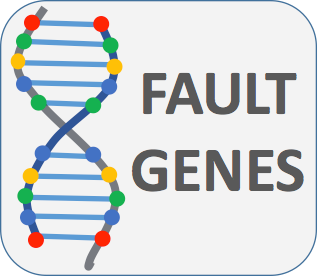

OpenStack Exceptions
This application is for demostration purposes ONLY. Should not be trusted as an accurate source of OpenStack Exceptions
View source code on Github
here
Type an Exception name or message
Keystone
{{(serviceCtrl.getService('keystone') | filter: {msg: ''} | filter:{msg:searchError}).length || 0}}
Nova
{{(serviceCtrl.getService('nova') | filter: {msg: ''} | filter:{msg:searchError}).length || 0}}
Cinder
{{(serviceCtrl.getService('cinder') | filter: {msg: ''} | filter:{msg:searchError}).length || 0}}
Glance
{{(serviceCtrl.getService('glance') | filter: {msg: ''} | filter:{msg:searchError}).length || 0}}
Neutron
{{(serviceCtrl.getService('neutron') | filter: {msg: ''} | filter:{msg:searchError}).length || 0}}
Swift
{{(serviceCtrl.getService('swift') | filter: {msg: ''} | filter:{msg:searchError}).length || 0}}
#
Name
Code
Message
{{$index + 1}}
{{exp.name}}
{{exp.code}}
{{ exp.msg }}
No Results